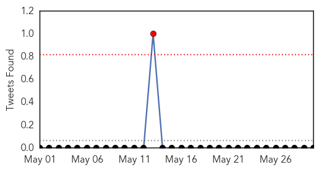
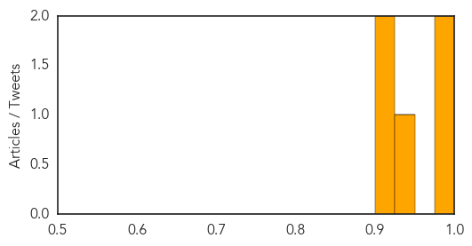

Ebola
30-Day Web Trend
0 alerts, 3 warnings

30-Day Twitter Trend
0 alerts, 0 warnings
Article Locations

Article Confidences
Top Articles:
- 0.998
- UPDATE: KU Hospital says Kansas City patient tests negative for Ebola
- 0.996
- Ebola will return, veteran scientist warns
- 0.994
- 'Ebola will return', scientist warns
- 0.994
- African Union Plays Impartial Arbiter Role – Envoy Solaja
- 0.993
- 'Ebola Will Return', Warns Veteran Congolese Scientist
- 0.992
- 'Ebola will return', veteran scientist warns
- 0.992
- Ebola will return, scientist warns
- 0.992
- Scientist warns Ebola will return
- 0.992
- Jean-Jacques Muyembe: Ebola Is Not Done, Could Return
- 0.991
- 'Ebola will return', veteran scientist warns
- 0.990
- 'Ebola will return', veteran scientist warns
- 0.989
- 'Ebola Will Return', Veteran Scientist Warns — Naharnet
- 0.989
- 'Ebola will return', veteran scientist warns
- 0.987
- LIBERIA: WHO Official Stresses Proactive Ebola Surveillance
- 0.985
- Researchers unraveling secrets of Ebola talk at UGA
- 0.984
- More Than 150 People Had Contact with Lassa Patient
- 0.984
- 'Ebola will return', veteran scientist warns
- 0.981
- Ebola will return, warns expert - Africa
- 0.981
- Bill Clinton Says He’s Ebola-Free After Annual Africa Trip, Raises Awareness For Issue
- 0.978
- US government contract Canberra company Aspen Medical to keep fighting Ebola
- 0.978
- 'Ebola will return', veteran scientist warns
- 0.973
- 'Ebola will return', scientist warns Paris
- 0.968
- 'Ebola will return', veteran scientist Jean-Jacques Muyembe warns
- 0.962
- Cheltenham Science Festival: the truth behind the Ebola outbreak and what could follow
- 0.956
- Patient returning from West Africa treated for fever at KU Hospi
- 0.954
- 'Ebola will return', veteran scientist warns
- 0.946
- Treating ebola - a story of hope and death
- 0.925
- Liberian Movie Star Urges Compatriots To Embrace Ebola Survivors
- 0.905
- Plight of SA ebola nurses probed
- 0.902
- Lost on the Ebola Money Trail
- 0.895
- Independent Newspapers Limited
- 0.823
- Finding Ebola — Ebola stories — Medium
- 0.791
- KU Hospital: Precautions taken for patient returned from Sierra Leone; public not at risk
Top Tweets:
- 0.969
- Ebola experts anticipating next epidemic - Town Hall http://t.co/43HGYV33Eu ebola EVD
- 0.953
- Kansas hospital monitoring patient for possible Ebola infection - Reuters http://t.co/XPu12UwKVm ebola EVD
- 0.923
- Lost on the Ebola money trail - Humanosphere http://t.co/t4wpxH7f0B ebola EVD
- 0.893
- Hopkins in clear over Ebola tweets - Belfast Telegraph http://t.co/txOZQ55u6O ebola EVD
- 0.838
- KU Medical Center treats patient with low risk for Ebola - KMBC Kansas City http://t.co/h1rquCLgU9 ebola EVD
- 0.832
- 'Ebola will return', veteran scientist warns - Yahoo News http://t.co/DK7udjE518 ebola EVD
- 0.776
- Blood from Amber Vinson used to create anti-Ebola drug - WKYC-TV http://t.co/nWOGFbDKkG ebola EVD
- 0.708
- Twitter troll Katie Hopkins cleared over offensive Ebola comments - Irish Examiner http://t.co/2iFnr73jEq ebola EVD
- 0.693
- Veteran scientist warns 'Ebola will return' - Business Insider http://t.co/iG6oKd3anA ebola EVD
- 0.693
- 'Ebola will return', veteran scientist warns - Business Insider http://t.co/G80tAJ8BXW ebola EVD
- 0.654
- Ebola experts anticipating next epidemic - Town Hall http://t.co/CGRf0F1rPn
- 0.642
- Stop “criminal” Ebola vaccines trial in Ghana - Coalition - Starr 103.5 FM http://t.co/LMlAYy1656 ebola EVD
- 0.607
- A Conversation With Lusu Sloan: 'Over 400 Market Women Died From Ebola in Liberia'
- 0.597
- LIBERIA: WHO Official Stresses Proactive Ebola Surveillance - Global News Network http://t.co/hGHB50fxiK
Dengue Fever
30-Day Web Trend
1 alerts, 1 warnings

30-Day Twitter Trend
0 alerts, 0 warnings

Article Locations

Article Confidences
Top Articles:
Top Tweets:
-
No tweets found for May 30, 2015